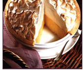

World's Healthiest Foods
Mamas Homemade Lemon Meringue Pie
Rich in nutritions and excellent in taste your favorite dish of all time is here.

30 Min- Prep Time
10 Min - Cook time
40 Min- Total
8 Servings
Ingredients:
- 1 cup white sugar
- 2 tablespoons all-purpose flour
- 3 tablespoon cornstarch
- 1/4 teaspoon salt
- 1 1/2 cups water
- 2 lemons, juiced and zested
- 2 tablespoons butter
- 4 egg yolks beaten
- 1 (9 inch) pie crust, bakedd
- 4 egg whites
Directions:
-
PreHeat Oven:
Preheat oven to 350 degrees F (175 degrees C)
Make Lemon Filling
In a medium saucepan..
- Whisk together 1 cup sugar, flou, cornstarch and salt.
- Stir in water , lemon juice and lemon zest
- Cook over medium-high heat, stirring frequently, until mixture comes to a boil.
- Stir in butter
- Place egg yolks in a small bown and gradually whisk in 1/2 cup of hot sugar mixtue.
- Whisk egg yolk mixture back into remaining sugar mixture
- Bring to a boil and continue to cook while stirring constantly until thik
- Remove from heat
- Pour filling into baked pastry shell.
-
Make Meringue
In a large glass or metal bowl...
- Whip egg whites until foamy
- Add sugar gradually, and continue to whip until stiff peaks from
- Spread meringue over pie, sealing the edges at the crust
-
Bake
Bake in preheated oven for 10 minutes, or until meringue is golden brown.